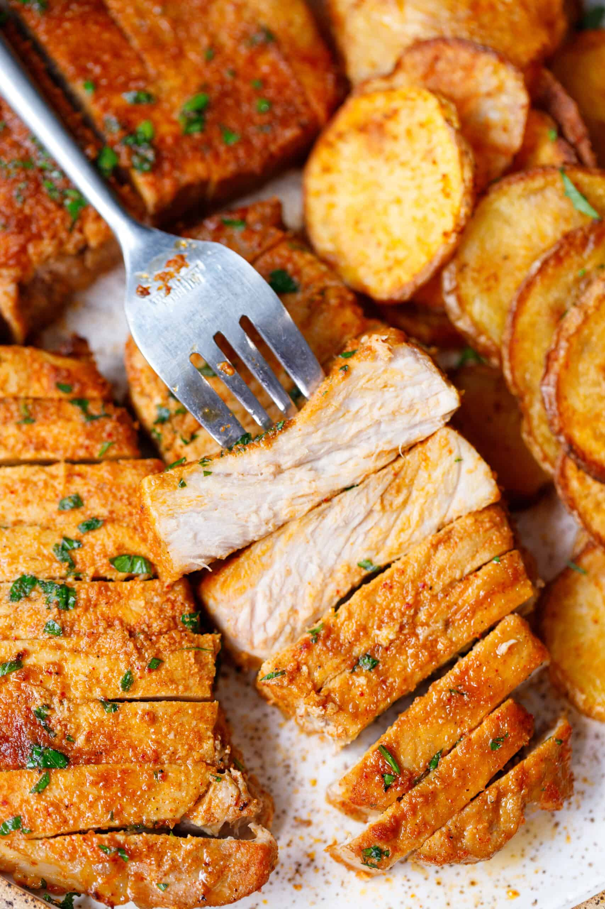

Pan Fried Pork Chops

Freshly made pork chops
Ingredients
- 4 boneless pork chops
- 2 teaspoons lemon juice
- 2 tablespoons chopped fresh parsely
- 1/2 teaspoon dried rosemary
- 1/2 teaspoon dried thyme
- 1/4 teaspoon pepper
Steps
- In a small bowl, combine the parsley, rosemary, thyme and pepper. Rub the mixture over chops.
- Sprinkle the pork chops with lemon juice.
- Grill over medium heat for 4-5 minutes on each side
- Let meat sit for 5 minutes before serving
Home